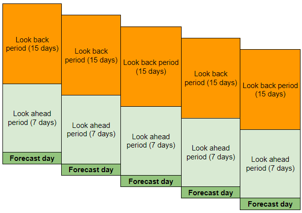
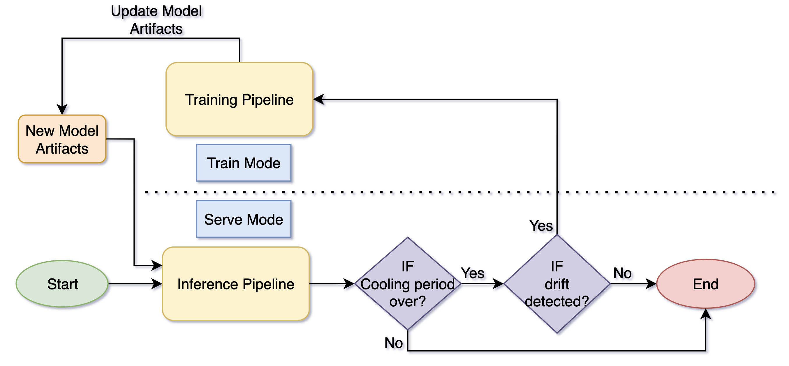
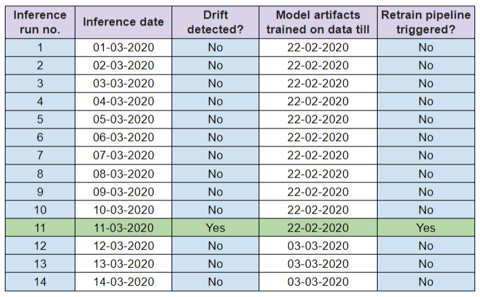
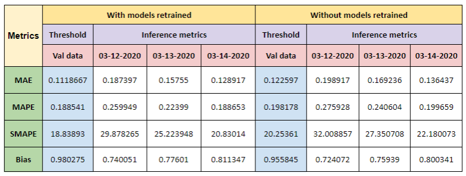

End-to-End MLOps on AWS: Part3.1- Time Series Forecasting: MLOps Overview and Simulation #
| Authors: Palash Nimodia , Abhishek Tawar , Steffi Andrade |
| Last Edited: 01/07/2023 |
| Previous Blog Link: End-to-End MLOps on AWS: Part1 - Introduction |
This blog is a part of a series of blogs based on MLOps workflows we built. In this blog, we will be talking about the time series solution developed using AWS sagemaker pipeline. For more details and a deeper understanding of MLOps, components used and the types of components; go through our previous blog . You can find the solution code repository here .
Use Case: #
The problem statement of this use case is to build an end to end MLOps solution for time series data. The solution will consist of a training pipeline and an inference pipeline built using sagemaker pipelines. The training pipeline will train an LSTM based forecasting model using the training data and save the model in s3. The inference pipeline will generate forecasts using the trained model in batch mode. It will also detect drift in model, data or both and retrain the model if drift was detected.
About Dataset: #
We used an open source city temperature dataset from kaggle. It contains the daily average temperature values for multiple cities with few other features. This pipeline is built to forecast temperature of one city at a time hence we filter out data for ‘Birmingham’ city for simulation. The granularity of the dataset was at a daily level. We will forecast the average temperature value as it is the target column. You can download the dataset from this site .
Forecasting Parameters and Metrics: #
- Based on the granularity of the dataset used, the forecasting frequency was set to daily level.
- The look back is 15 days and the look ahead period is 7 days.
- We generated forecast for one day after the look ahead period (referred here as inference day/forecast day.)
|  |
|---|
| Forecasting Period Window |
Forecasting Period Window
- The pipeline will be triggered on a daily basis to forecast the average temperature (Target column).
- The evaluation metric considered to measure the forecasting accuracy is MAPE (Mean Average Percentage Error). This metric will be used to identify if model drift is detected.
High Level Workflow: #
|  |
|---|
| End-to-end AWS Sagemaker Pipeline |
The forecasting solution consists of two main pipelines: Training pipeline and Inference pipeline. Both pipelines consist of four main components that are tied together in a specific sequence to build the pipeline, they are:
- Processing
- Algorithm
- Explainability
- Monitoring
Inference pipeline:
- All components in the inference pipeline are run in the serve mode. The inference pipeline will fetch the trained ML model, inference data and pipeline parameters. Using these inputs it generates temperature forecast in batch mode.
- Pipeline will also check for drift if the cooling period has passed. Cooling period prevents retraining pipeline from being triggered on consecutive days and waits for lookaheads period of time for the forecast from the new model to be evaluated for drift.
- If drift is detected, it will trigger the training pipeline and complete the execution of the inference pipeline.
Training pipeline:
- All components in the training pipeline are run in the train mode. Training pipeline takes the latest actuals data (split in to training set and validation set) as input.
- The pipeline trains a model and update the parameter store with the latest model artifact paths generated. This ensures that in the next run of the inference pipeline it uses the latest model artifacts.
Simulation: #
A simulation exercise was planned to test the entire ML lifecycle. For this simulation, we ran the pipeline as they would in an actual production environment. Since we worked with daily level data, we ran the simulation for 14 inference dates, from 01-03-2020 to 14-03-2020. The monitoring components can measure both data drift and model drift. We chose the retraining trigger to be model drift which is measured by degradation of MAPE value.
Each run of the inference pipeline is defined in the table below:
|  |
|---|
| Simulation Run Dates |
Setup: #
The input data files required to generate inference for each ‘inference date’ for both pipelines in the simulation were saved in s3. When a pipeline runs for a particular inference day it will fetch the inference or train data file for that day. Every file was identified by including the corresponding inference date in its nomenclature.
Two lambda functions were created and scheduled. The first lambda function (named “Update-inference-date-lambda”) was created to update the inference date (increment by one day) parameter in the parameter store. This parameter defined the date for which the inference pipeline had to generate inference. The second lambda function (named “BT-pipeline-trigger-lambda”) was used to trigger the inference pipeline. Both lambda functions were scheduled using event bridge rules. The event rules were enabled to trigger the first lambda function 2 minutes before the second since this will make sure every new run of inference pipeline is different (next day of the previous run). Also note, eventbridge in scheduled mode cannot pass parameters to pipeline hence lambda (with event bridge rule) is a better trigger for pipeline.
Execution: #
- To run the simulation inference pipeline was scheduled to run every hour, for a period of 14 hours: to generate inference for 14 consecutive days.
- The table above shows the details of all the 14 runs. Before starting the inference pipeline runs we ran the train pipeline to train the model on latest actuals data (till date 22-02-2020).
- Inference pipeline also check if the cooling period is going on for the trained model which in our case is 7 days (= lookahead period). Hence, we will not check for model drift even in first 7 runs, and so the retraining pipeline will definitely won’t be triggered till 07-03-2020 inference date.
- For the first 10 runs no drift was detected. The data had natural drift which was detected on 11th run (highlighted with green in the table). Therefore, inference pipeline triggers the training pipeline.
- The training pipeline then trained a new model (with latest actuals data till 03-03-2020) and save the artifacts in s3, update the parameter store with new artifacts paths generated during re-training.
- In the next 3 runs inference pipeline generateed forecast with the new model.
Conclusions: #
|  |
|---|
- On the inference pipeline run for 11-03-2020, model drift was detected and training pipeline was triggered. There was natural drift in the data to cause model drift and hence there was no need to add external noise to the data.
- For the 3 dates which used retrained models, we also generated the forecast for these dates using the older model. This was done to check the effect of model retraining on forecast accuracy. The experiment shows that accuracy improved for all the dates after retraining.
This blog gave you an overview of the end-to-end workflow of the time series forecasting pipeline developed using AWS sagemaker pipelines. In the next blog, we will discuss the working of the end-to-end sagemaker pipeline, the various steps involved and the AWS services used. You can find the next blog here .
References: #
- https://docs.aws.amazon.com/sagemaker/latest/dg/define-pipeline.html
- https://docs.aws.amazon.com/sagemaker/latest/dg/build-and-manage-steps.html
- https://sagemaker-examples.readthedocs.io/en/latest/sagemaker-pipelines/tabular/abalone_build_train_deploy/sagemaker-pipelines-preprocess-train-evaluate-batch-transform.html
- https://awstip.com/how-to-automatically-trigger-a-sagemaker-pipeline-using-eventbridge-3b71829a9e5